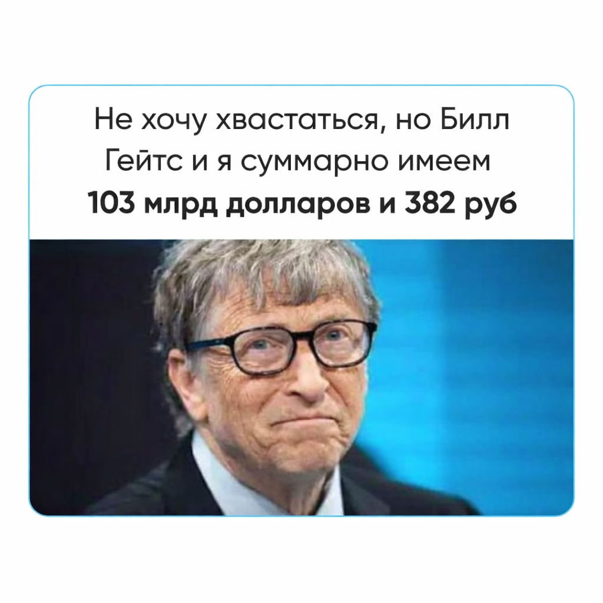

О чем мы молчим, когда говорим о деньгах

Мы привыкли думать, что если нет денег — надо больше работать или учить фин. грамотность. Но если бы деньги были только математикой, все были бы богаты.
Деньги — один из языков бессознательного. Тот язык, на котором желание встречается с символом обмена и долга. Этот язык не про богатство. Он про право быть.
Помните этот момент перед кнопкой «оплатить», когда внутри вдруг что-то сжимается? И деньги есть же, но само действие — отдать, потратить на себя, назвать цену — вызывает странный, иррациональный спазм. Как будто в этот момент решается не судьба покупки, а ваша собственная судьба.
Для многих деньги становятся единственным пропуском в жизнь: «Я плачу, значит, я имею право здесь находиться».
В этом месте деньги превращаются в инструмент контроля и броню. Возникает фантазия:
«Если я плачу — я в безопасности, я управляю ситуацией. Меня не могут отвергнуть, потому что я — тот, кто платит».
Так деньги служат защитой от уязвимости в отношениях. Но за этим контролем часто стоит ужас. Ужас, что если убрать купюры, то тебя самого — настоящего, живого, уязвимого — никто не выберет. Что любовь — это не дар, а сделка. Что тепло нужно заслужить, отработать или купить. И тогда начинается бегство от этого ужаса.
Мы начинаем покупать иллюзию безопасности
Мы дарим дорогие подарки, чтобы нас не бросили. Мы платим за других, чтобы чувствовать себя сильными. Мы боимся принять помощь, и это может быть связано с тем, что в нашей картине мира за помощь всегда выставляют счет. И этот счет — наша свобода.
Парадокс в том, что чем больше мы пытаемся контролировать жизнь через деньги, тем больше мы от них зависим. Не финансово. Эмоционально.
Мы запрещаем себе тратить на себя, зачастую потому что «я еще не заслужил»:
- Новое пальто? «Еще поношу старое»
- Массаж? «Это же роскошь»
- Отпуск? «Сначала надо заработать больше»
За каждым «не сейчас» стоит одно убеждение: «Я еще не заслужила».
Мы сливаем деньги, как только они появляются, чтобы избавиться от невыносимого напряжения «быть с деньгами».
Эту проблему нельзя решить Excel-таблицами и курсами финансовой грамотности. Её можно решить только там, где она родилась — в отношениях. В терапии. Потому что корень не в умении считать деньги, а в праве на жизнь.
Деньги — это прекрасное зеркало. Если долго в него смотреть, можно увидеть не свой банковский счет, а свою историю. Историю о том, как нас любили. О том, как нас принимали. О том, разрешили ли нам просто быть, или наше присутствие всегда требовало оплаты.
Психическая зрелость
И может быть, взросление в отношениях с деньгами начинается не с того момента, когда мы начинаем больше зарабатывать.
Психическая зрелость в отношениях с деньгами наступает, когда они перестают использоваться как защита от тревоги и инструмент поддержания самоценности.
Когда мы понимаем: меня можно любить не за то, что я плачу. Не за то, что я даю. А просто за то, что я есть.
И даже если у меня ничего нет, я все равно есть. И это, пожалуй, самая дорогая валюта в мире.
Если вы устали платить за право быть, а не за свои желания — приходите исследовать это.
Список источников
- 1. Фенихель О. Психоаналитическая теория неврозов
- 2. Винникотт Д. В. Игра и реальность
- 3. Кохут Х. Анализ самости